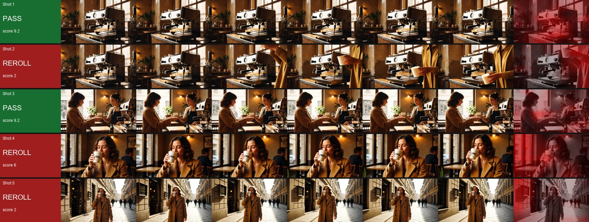

Open-source tool · 2026
ComfyUI-ShotPlanner
Turns a brief or a script into a shot list with image and video prompts for every shot.

The brief
ComfyUI-ShotPlanner turns a brief or a script into a shot list, with an image prompt and a video prompt for every shot. It runs on Gemini, Claude or GPT, or offline. The same pack includes the Shot Critic, which reviews each generated shot and routes it, and the Ad Assembler, which cuts the shots into a finished ad. Together they are the planning and finishing ends of the NOVARA pipeline.
What I did
- Wrote the nodes in Python and published them as open source.
- Shot Planner: a brief or script in, a shot list out, with image and video prompts per shot.
- Shot Critic: Gemini reviews every shot three times and takes a majority vote, routing each to pass, detail fix, consistency fix or re-render.
- Ad Assembler: timeline, transitions, supers, end card and audio mix, out to MP4.
Tools
- Python
- ComfyUI
- Gemini
- Claude
- OpenAI GPT
- Offline mode
Three nodes, both ends of the pipeline
Highlighted stages are the nodes in this pack.
- Brief or script: Plain text in.
- Shot Planner (my node): Writes the shot list, with an image prompt and a video prompt per shot: Options: Gemini, Claude, GPT, Offline.
- Generate: Images and video from the prompts, with any models.
- Shot Critic (my node): Gemini reviews every shot 3 times, majority vote, then routes it: Options: Pass, Detail fix, Consistency fix, Re-render.
- Ad Assembler (my node): Timeline, transitions, supers, end card, audio mix.
- MP4: The finished ad.
Results
- nodes: Shot Planner, Shot Critic, Ad Assembler
- 3
- ways to run: Gemini, Claude, GPT or offline
- 4
- prompts per shot: image and video
- 2